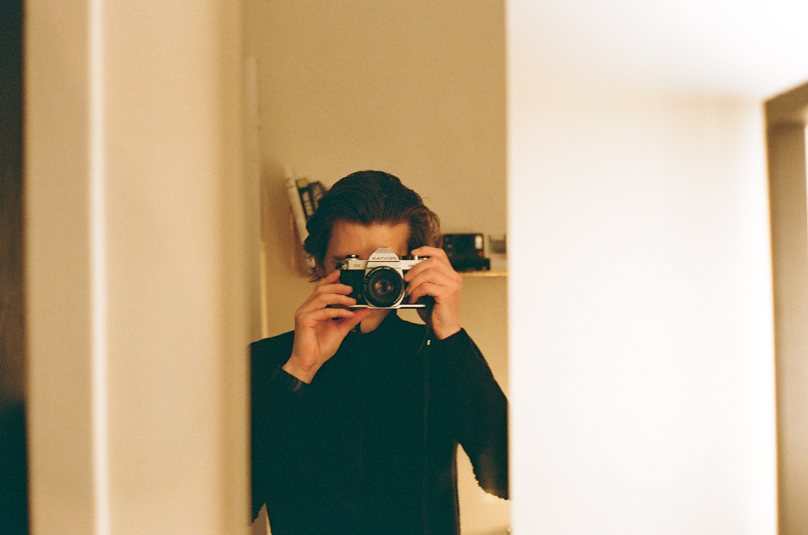
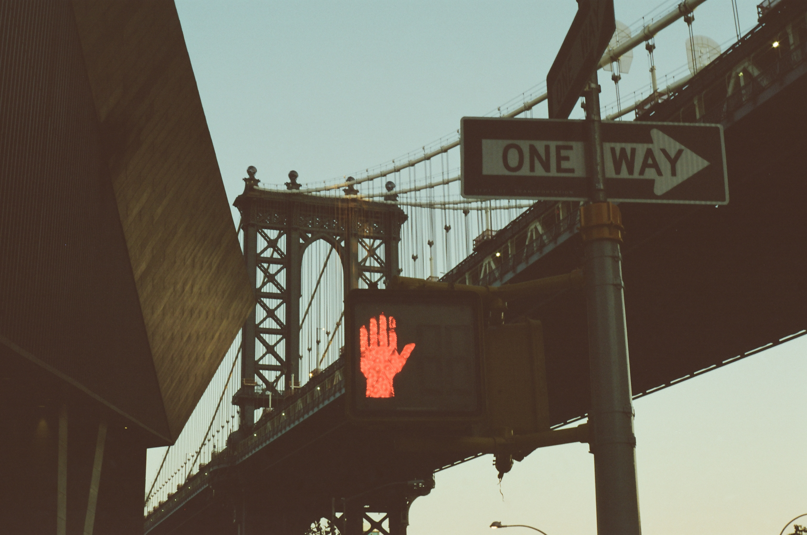

Het ontstaan van Miloo en zijn picturesAls hobby doe ik aan fotografie, of specifieker, film fotografie. De passie is ontstaan toen ik voor een jaar in het buitenland verbleef. Toen ik twintig werd, besloot ik naar het buitenland te verhuizen, daar acteerschool te volgen om dan voor de camera mijn talent te delen met de wereld. Welke plek is beter dan New York City om dit te doen. Na een lang proces om een Green Card te behalen, kwam de kans er uiteindelijk om mijn droom achterna te jagen. Meteen toen ik aankwam in New York schreef ik me in aan de, toch wel hoogstaande, School “Stella Adler Studio of Acting”. Dit combineerde ik dan met een job als opdiener in een burger bar om toch wat uit de kosten te blijven. Ik wandelede enorm veel in New York. Tijdens één van mijn verkenningen passeerde ik B&H, één van de grootste camerawinkels ter wereld. Als je in deze twee verdieping grote camerawinkel je ding niet vindt, vind je het nergens. Ik besloot om binnen eens een kijkje te nemen. Al snel kwam ik aan de praat met een van de verkopers. Zoals de meeste mensen tijdens hun vakantie doen, trok ik ook mijn mobile telefoon uit mijn broekzak en begon ik momenten vast te leggen op mijn digitaal schermpje. Toch had ik iedere keer een onvoldaan gevoel. De verkoper kon me overtuigen om een toestel te kopen. Hij bood me een analoge filmcamera aan, de Pentax K1000. |
 |
Thirtyfive milimetresDeze 35 mm film camera, ook wel beter gekend als de beginnerscamera, sprak me het meeste aan in zijn aanbod. Toen ik thuis kwam begon ik meteen video's op te zoeken over hoe ik met dat toestel best tewerk kon gaan. Na een paar uurtjes achter mijn scherm startte mijn tocht door de stad opnieuw. De verkoelde, herfstige, kleurrijke straten in de stad waren mijn eerste slachtoffers om, op mijn Kodak Portra 400 filmrolletje te fotograferen. De zoektocht naar de juiste instellingen, de juiste lichtinval en compositie waren onbekend terrein voor mij. Toch lukte me het om enkele prachtige beelden te vatten. |
 |
Eliz DigitalBij Eliz Digital, een film shop in China Town, niet ver van mijn verblijfplaats, werd ik al snel vaste klant. Wekelijks bracht ik er mijn verslonde filmrolletje binnen, soms meer dan één. Het geluid van de shutterspeed die zich opent en weer sluit werkte als een soort van verslaving. Ik kreeg er maar niet genoeg van. Straten die ik al vaker doorgelopen had, beleefde ik op een veel intensere manier. De afgewerkte foto's die ik per mail opgestuurd kreeg van de fotowinkel bevestigde de nostalgische gevoelens die ik in de straten beleefd had. |
 |
Miloo or MilooIk dacht vaker aan het verder opbouwen van deze creatieveling die in mij naar boven kwam. Miloo.pic begon snel vorm te krijgen. Maar vanwaar deze naam? Miloo is mijn voor -en achternaam verkort. Dit was de computernaam die mij gegeven werd door Colruyt. Mijn New Yorkse vrienden leerden mij de naam juist uit te preken, maar hierover kan nog gediscussieerd worden. |
 |